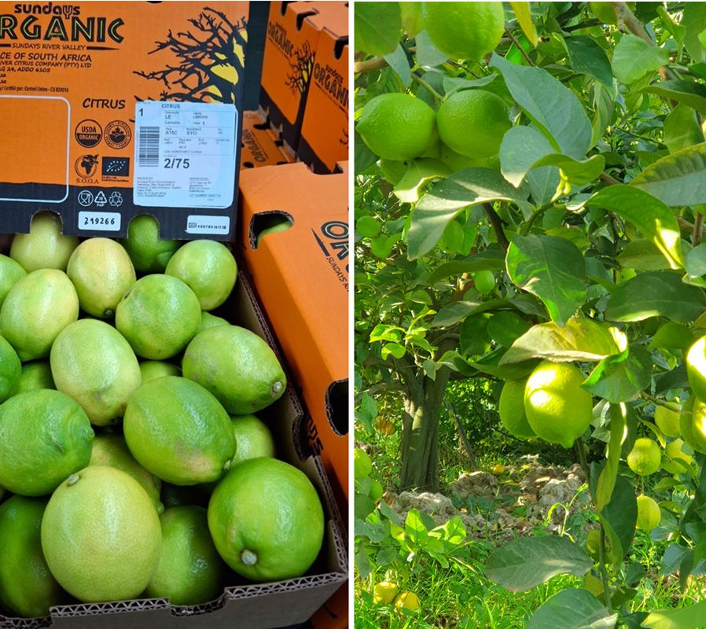

South Africa's Organic Pioneers Cultivate a New Future

South Africa's Organic Pioneers Cultivate a New Future
South Africa's farmers are tearing up the rulebook. In the Cederberg mountains and the rolling hills of the Eastern Cape, they are walking away from chemical fertilisers and embracing something older, namely nature.
That is the finding of a growing movement of organic pioneers who have discovered that going green is not just about growing food differently, it is about selling it differently too, according to farmers, industry leaders, and agricultural experts across the country.
Citrus Leads the Way
Vegetables remain the most common organic commodity, alongside herbs, deciduous fruits, and subtropical varieties, however, if one crop symbolises the sector's potential, it is citrus. Organic citrus has emerged as a significant export market for South Africa, with buyers in Europe and North America increasingly willing to pay premium prices for pesticide-free produce. In the Kirkwood region, SOGA Organic operates as the country's only certified organic citrus juice producer, exporting roughly 2,000 tonnes of not-from-concentrate juice to Europe and Canada each year.
Paul Marais, Managing Director of SOGA Organic, says there is always a way that nature fights pests and diseases — if the soil is healthy, the tree will automatically be healthy too. This nature-first approach is not idealism but a market necessity, as European and North American consumers, increasingly conscious of pesticide residues, are driving explosive demand, with Volkert Engelsman, CEO of organic supplier Eosta, noting that organic lemons can command prices up to four or five times the conventional price.
The Challenge: Market Access
Organic farmers face formidable hurdles, from lower yields and pest control challenges to limited market access. Smallholder farmers are hit hardest, with a 2025 Limpopo study revealing that while 86.6 per cent see high-profit potential in organic farming, a staggering 88.4 per cent find certification standards too restrictive.
Innovative Solutions
To overcome these barriers, a new support ecosystem is emerging. The SA Organic Sector Organisation and Participatory Guarantee Systems SA are making certification more accessible, while companies like Wild Coast Foods aggregate smallholder produce and connect farmers to markets. NGOs like Thanda retain 85 per cent of vegetable produce within local communities through ‘Agri-Hubs,’ while SaveAct's savings groups help over 110,000 members, mostly women, finance their operations. Eosta supports conventional farmers to shift to organic through composting and carbon credits: “we are working with them right from the beginning,” says Engelsman.
A Fertile Future
The success of organic farming in South Africa rests on a powerful synergy: growing global demand for sustainable food must be matched by robust local systems that empower farmers. By reimagining the value chain — making certification accessible, aggregating smallholder produce, and connecting farmers directly to markets — South Africa is building a more resilient agricultural sector, one that requires deliberate coordination and institutional support but suggests a bright future for its organic farmers.